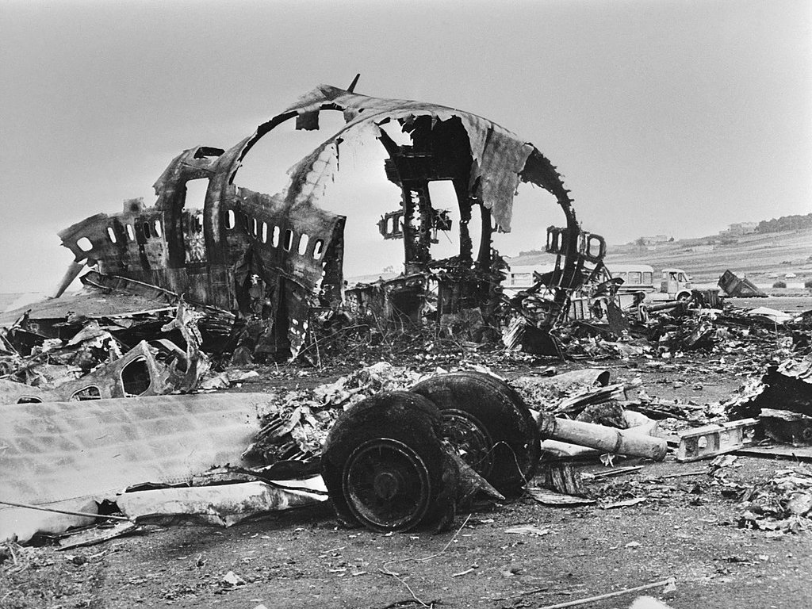
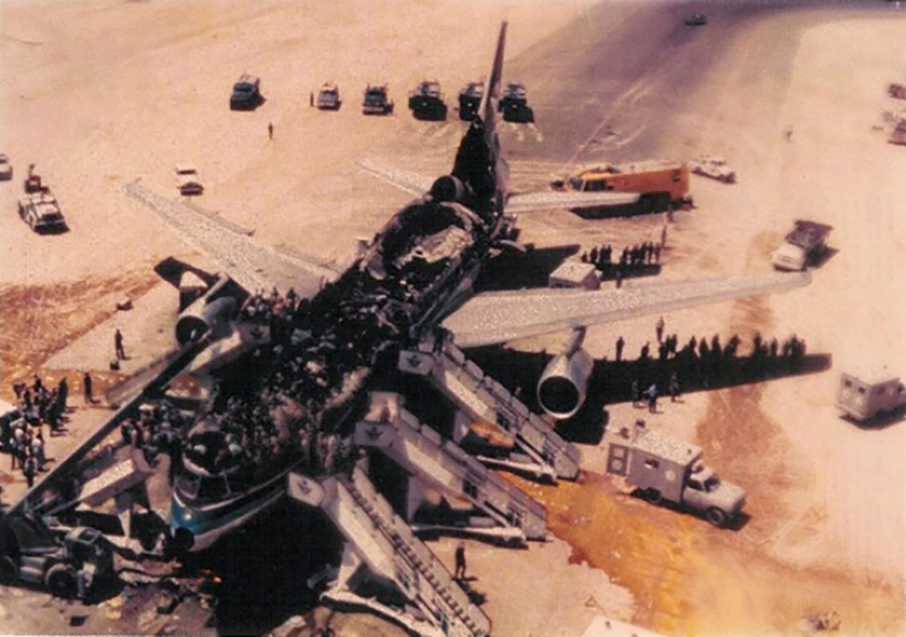
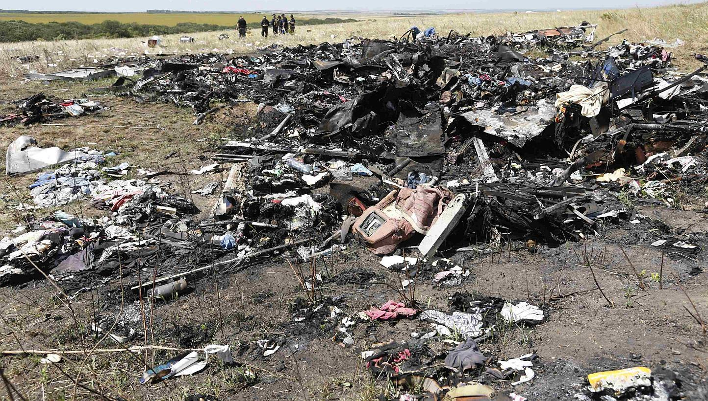

Największe katastrofy lotnicze, jakie się zdarzyły w historii lotnictwa.
Największa (pod względem liczby ofiar w samolotach) katastrofa w lotnictwie cywilnym. Wydarzyła się 27 marca 1977 roku o 17:05 czasu lokalnego na lotnisku Aeropuerto Los Rodeos w San Cristóbal de La Laguna na Teneryfie (Wyspy Kanaryjskie).

Przyczyna: Błąd pilota, złe warunki atmosferyczne, problemy z komunikacją radiową;
Ofiary śmiertelne: 583 osoby (61 osób rannych).
Największy wypadek lotniczy pod względem liczby zabitych w wypadku jednego samolotu. 12 sierpnia 1985 Boeing 747-SR46 japońskich linii Japan Airlines na trasie Tokio-Osaka uległ awarii w dwanaście minut po starcie z Tokio. Po kolejnych 30 minutach walki załogi o utrzymanie go w powietrzu, runął na górskie rejony środkowej części wyspy Honsiu. Spośród 524 osób na pokładzie (pasażerów i załogi), przeżyło tylko czterech pasażerów.
Przyczyna: Dekompresja kabiny spowodowana błędną naprawą;
Ofiary śmiertelne: 520 osób (4 osoby ranne).
Miała miejsce 3 marca 1974 roku w lasach nieopodal miasta Ermenonville, 30 km na północny wschód od Paryża; była to pierwsza tak poważna katastrofa w lotnictwie cywilnym: życie straciło w niej 346 osób. Przyczyną okazała się nagła, wybuchowa dekompresja kadłuba i uszkodzenie systemów hydraulicznych odpowiedzialnych za sterowanie samolotem.
Przyczyna: Oderwanie drzwi luku bagażowego;
Ofiary śmiertelne: 346 osób (0 osób rannych).
Wydarzyła się 19 sierpnia 1980 roku, podczas rejsu maszyny saudyjskich linii Saudi Arabian Airlines (nr rejsu: 163) z lotniska w Rijadzie do miasta Dżudda.

Przyczyna: Pożar na pokładzie;
Ofiary śmiertelne: 301 osoby (0 osób rannych).
Zamach dokonany 17 lipca 2014 roku niedaleko wsi Hrabowe (w pobliżu miasta Torez) w obwodzie donieckim na Ukrainie, około 40 kilometrów od granicy z Rosją[2] przez zestrzelenie samolotu pasażerskiego Malaysia Airlines Boeing 777 nr lotu MH17 kierowanym pociskiem rakietowym ziemia–powietrze Buk M1 z wyrzutni nr 332, należącej do 53. Rakietowej Brygady Przeciwlotniczej z Kurska sił zbrojnych Federacji Rosyjskiej.

Przyczyna: Zestrzelenie kierowanym pociskiem rakietowym ziemia–powietrze Buk M1 należącym do sił zbrojnych Federacji Rosyjskiej;
Ofiary śmiertelne: 298 osób (0 osób rannych).